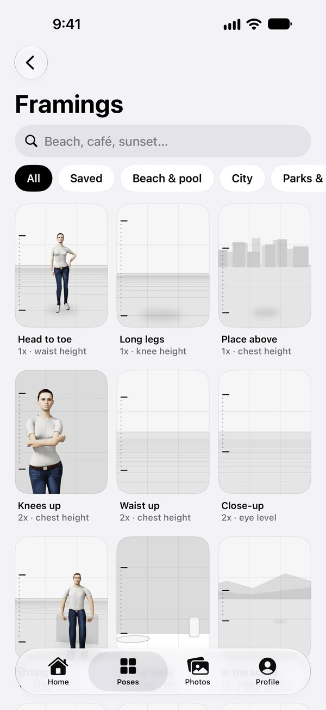

Get the photo
you wanted.
ipose is a posing coach and a framing coach in one camera. Pick a pose, hand your phone to whoever is taking the photo, and ipose tells them where to stand, how high to hold it and when to shoot.
Never wonder what to do with your hands.
178 poses drawn as real people, for one, two or a whole group: standing, sitting, walking, leaning on a wall, with a coffee or a jacket. Each comes with three simple lines to say, like “Put your weight on your back leg.”
It was never you. It was the angle.
A phone held too high and tipped down shrinks anyone. ipose tells whoever is holding it what to fix, one step at a time, written into the picture: the lens, how far, how high, level. When it all lines up, it takes the shot.
Pick the framing. They line it up.
38 framings for the beach, a café table, a city street and more. Two marks along the edge of the camera show where the head goes and where the photo ends, and turn green when it’s right.

Your best shot, picked for you.
Photos goes through the bursts of look-alike shots and picks the keeper: sharp, well lit, eyes open, nobody looking away. It tells you why, then helps you clear out the rest, always with your review first.
Private by design. Nothing leaves your phone.
Pose matching, framing and photo picking all run on your iPhone or iPad. There’s no account to make and no server to send anything to.
- No account
- No ads
- No tracking
- Nothing uploaded
- On-device AI